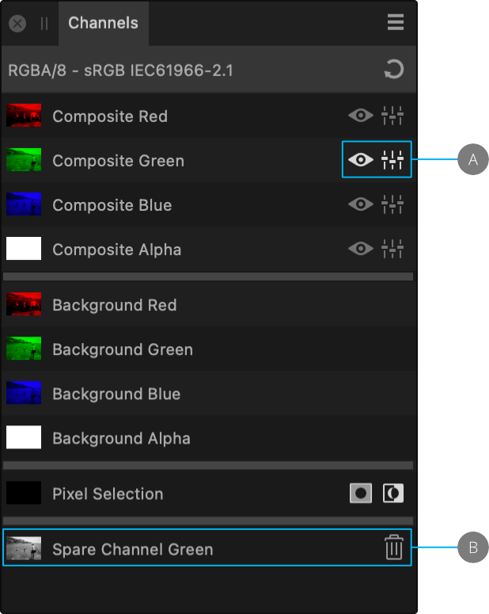

You can select one or more channels for further editing. The selected channel ready for editing is indicated on the panel by both the Visible as well as the Editable icons.

(A) Composite Green channel selected and editable. (B) Spare Channel created and renamed.
About editing channels
The Channels panel displays a list of channels based on current document information and available for editing. Pixel Selection will always appear at the bottom of the panel even when no selection is active.
To hide/show channels:
Do one of the following:
From the Channels panel, click Visible on the channel entry.
From the Channels panel, -click the channel you wish to target and select Toggle Visible from the pop-out menu.
To protect channels from editing:
Do one of the following:
From the Channels panel, click Editable on the channel entry. A grayed out icon means the channel is no longer editable.
From the Channels panel, -click the channel you wish to target and select Toggle Editable from the pop-out menu.
Editing spare channels
The spare channel that stores your mask can be isolated for editing. This lets you paint and erase directly on the spare channel, as well as apply filters such as Gaussian Blur for softer mask edges.
To edit individual channels:
From the Channels panel, -click each of the Background channels in turn and select Create Spare Channel.
(Optional) Rename the newly created spare channels.
-click the spare channel entry to isolate it and select Load to Pixel Selection.
(Optional) Select another spare channel and -click and select Subtract From Pixel Selection. This helps if there is an undesired overspill of color onto areas.
Add an Adjustment of choice.
From the top menu, choose Select>Deselect.
Return to the Adjustment and modify it further.
To rename or duplicate a spare channel:
-click the spare channel entry and select the option.
The duplicate is stored below the original as a new spare channel entry.
To apply a Quick Mask to a spare channel's pixel selection:
-click the spare channel entry and select Load To Pixel Selection.
 To hide/show channels:
To hide/show channels: To protect channels from editing:
To protect channels from editing: